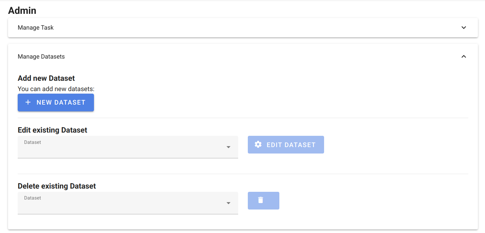
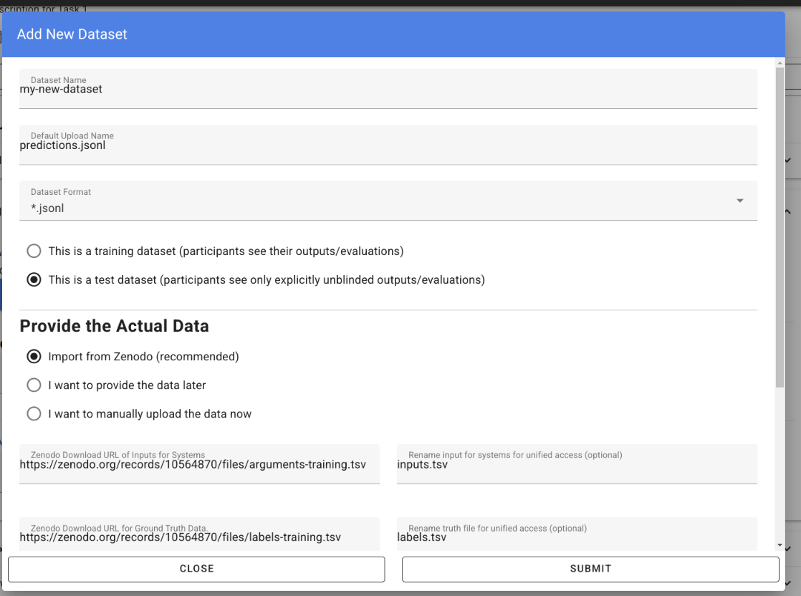
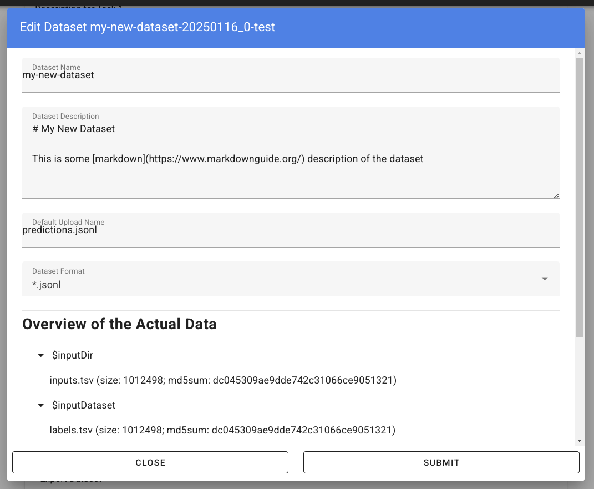

Organizing Tasks¶
Apply for a Reviewer Account
Create an account at tira.io and ask an admin to add you to the tira_reviewer group.
Setup the Git Runner
Click on “Edit Organization” to add / edit your organization.
In the “Edit Organization” modal, you can specify the credentials for your git integration that is used as backend in your tasks
Create a Docker Image for the Evaluator
An evaluator is a software that gets a system’s run and the truth data as input to create the run’s evaluation. A step-by-step guide is available in the Add a new Evaluator section.
Add the new Task and Dataset to TIRA
We assume that you have a reviewer login to tira, the dataset, and the evaluator for your task ready.
Visit the overview of all tasks at tira.io
Click on “Add Task” and fill out the corresponding form (use the Master VM Id that you received during registration, e.g.,
princess-knightwas a baseline in Touché)Click on your newly created task
Click on “Add a new Dataset” and fill out the corresponding form. A step-by-step guide is available in the Add a new Dataset section.
Navigate to the Evaluator section of your new dataset. Click on “Git CI” to use the CI backend and specify the Docker image of the evaluator and the evaluation command.
Upload Public Baselines
In the best case, you provide the code, a published docker image, and instructions on how to compile the code into a docker image to simplify participation in your shared tasks.
We have some examples on baselines that you can adopt for your shared task, e.g.:
The baselines for Touché-2023 at CLEF
The baseline for PAN-2023 at CLEF
To simplify testing software submissions locally before they are uploaded to TIRA, we provide a tira-run command that participants can use to test their image locally. The tira-run commands executes a software as it would be executed in TIRA.
You can find some examples of shared tasks that use tira-run in their baselines to simplify participation here:
We recommend that you have for all of your baselines an tira-run example so that you can point participants to this example if their software submission fails in TIRA. For this, you need:
The baseline should be publicly available, e.g., at Dockerhub
You need a small sample of the data (can be artificial, but must have the same structure/format as the test data)
Assuming that you have published the baseline for your task at dockerhub under the name <DOCKER_IMAGE_BASELINE>
and that the baseline is executed via the command <BASELINE_SOFTWARE_COMMAND> inside the container and that you have a directory tira-sample-input with the sample data in the git repository of your baseline, you can add the following documentation (replace the placeholders with the correct values) to your README:
You can test docker images that you would submit to TIRA locally via `tira-run`.
The `tira-run` commands executes a software as it would be executed in TIRA (i.e., with sandboxing using the same command pattern).
We recommend that you test your software locally on the sample dataset `tira-sample-input` before uploading it to TIRA to ensure that your software works correctly (this also simplifies debugging as everything is under your control and runs on your machine).
Please install `tira-run` via `pip3 install tira`.
After `tira-run` is installed, you can execute the baseline on the sample dataset `tira-sample-input` via this command:
`tira-run --input-directory ${PWD}/tira-sample-input --image <DOCKER_IMAGE_BASELINE> --command <BASELINE_SOFTWARE_COMMAND>`
This command should create the following output in `tira-output`: <TODO_ADD_EXAMPLE_OUTPUT>
Add an Evaluator¶
Evaluators get three variables as input in TIRA:
the
$inputDatasetvariable contains the ground-truth data,the
$inputRunvariable contains the to-be-evaluated run, and- the
$outputDirvariable points to the directory at which the evaluator should create the evaluation.prototextfile containing the evaluation results.
- the
Evaluators should produce helpful guidance for runs that are not valid (e.g., clarify the inconsistency with a message printed to stdout instead of failing with an exception). Users can see the output (stdout and stderr) and the evaluation results of unblinded evaluations (in case it is a test dataset an admin manually unblinds the evaluation after ensuring it does not leak confidential data) or all training/validation evaluations (i.e., evaluations that use a training or validation dataset as input).
Your evaluator must be compiled as a docker image and uploaded to Docker Hub so that TIRA can load your image. Here are some recent evaluators that you can use as blueprint for your own evaluator:
The huggingface evaluator is an evaluator that supports all evaluations in huggingface evaluate. This should be the default evaluator in most cases.
The evaluator for multilingual stance detection of Touché23 together with instructions on how to build the docker image
The clickbait-spoiling-eval.py script used in the Clickbait Spoiling task at SemEval 23 together with instructions on how to build the docker image and the command to add in TIRA.
The ValueEval 2023 evaluator used in SemEval-2023.
ir_measures for the evaluation of IR experiments.
Add a new Dataset¶
Note
TIRA can run evaluations on confidential and public datasets. Shared tasks on confidential datasets require software submissions whereas shared tasks on public datasets can enable run submissions.
TIRA expects that every dataset is partitioned into two parts:
System inputs: This partition is passed as input to the systems that are expected to make predictions based on those inputs. Systems submitted to TIRA only have access to this part of the dataset. The system inputs should be easy to process, for instance, we recommend to use .jsonl as this data format is well supported in many diverse frameworks.
Truth labels: This partition contains the ground truth labels used to evaluate system predictions. Submitted systems do not have access to the truth labels, only the evaluator of the organizer can process the ground truth labels, to calculate evaluation measures for the output of systems. It is possible to upload the truth labels after the shared task, e.g., when the truth labels require to annotate outputs of all submitted systems.
If your dataset allows it and is final, we recommend that you upload it to Zenodo and import it to TIRA from Zenodo. Zenodo allows per-request access to datasets, so you can make the inputs publicly available to participants and leave the ground truth labels in a private record (potentially publishing it after the shared task). Zenodo aims to operate for the next 20+ years, making it a perfect choice for research data produced for/in shared tasks. It is fine to have non-final datasets only in TIRA, but for final datasets, uploading them to Zenodo and importing them to TIRA from Zenodo has major benefits. TIRA can either import .zip files from Zenodo (e.g., like zenodo.org/records/12722918/dl-top-10-docs-20240701-inputs.zip) or the files directly.
As soon as the system inputs are ready, you can define the expected output format in which systems should produce their predictions. TIRA has a set of (optional) validators (currently .run, .jsonl, and .tsv format) for standard output formats that allow to give participants fast feedback in case their predictions have an invalid format. We recommend to use .jsonl as output format for NLP tasks and .run files for IR tasks (if a format that you would like to use is not yet supported, please create an issue, we are able to include new formats fastly during the setup of a shared task).
To add a new Dataset, navigate to your task in TIRA, if you are authenticated as task admin, you see the Admin panel. Please expand “Manage Datasets” and click on “New Dataset”.
This will open the form for creating a new dataset:
It is important that datasets for the same task use the same format for their system inputs, including the structure and names of the files so that software submissions can run on different datasets without modification. For that reason, we renamed the arguments-training.tsv and the labels-training.tsv that we import from Zenodo into inputs.tsv respectively labels.tsv.
After you have created the dataset, you can verify and modify it by clicking on “Edit existing Dataset”, the form will show the imported files and allow to modify the meta data:
Note
Starting from here the documentation is WIP, Remaining TODOS: 1. Access of newly created dataset (one tab for python, one for bash, one for ir_datasets).
We recommend that you add a tiny and public smoke test dataset with ca. 10 instances so that participants can easily test their approaches. For instance, if you named your public smoke test dataset <dataset-id> in the task <task-id>, participants can process the dataset via:
# dependencies installed via: pip3 install tira TBD
# the tira command is installed via pip3 install tira TBD
# dependencies installed via: pip3 install tira ir_datasets TBD
This code will work inside and outside the TIRA sandbox (within the sandbox thst has no access to the internet, the code above will use the dataset mou ted read only into the container as anounced via environment variables).
Now that the data is available, please configure next its evaluation by adding an Evaluator.
Note
This is the previous version
Modifying virtual machines¶
Login to the machine where the VM exists (
ssh tira@betawebXYZ`)Locate the complete
[vmName]fromtira/model/users/[users].prototext.- RAM
On dockerized tira hosts: enter the docker container. You can do this using:
docker exec -ti $(docker ps|grep 'tira-io/tira-host'|awk '{print $1}') bash
Then run:
tira vm-shutdown [userId] VBoxManage modifyvm [vmName] --memory [MBs] tira vm-start [userId]
- CPUs
On dockerized tira hosts: enter the docker container. You can do this using:
docker exec -ti $(docker ps|grep 'tira-io/tira-host'|awk '{print $1}') bash
Then run:
tira vm-shutdown [userId] VBoxManage modifyvm [vmName] --cpus [number] tira vm-start [userId]
- HDD space (read/write from VM, is sandboxed along with VM)
On dockerized tira hosts: enter the docker container. You can do this using:
docker exec -ti $(docker ps|grep 'tira-io/tira-host'|awk '{print $1}') bash
Then run:
cd /home/tira/VirtualBox\ VMs/[virtualMachineId] tira vm-stop $(basename "$PWD") VBoxManage createhd --filename data.vmdk --format VMDK --size [MBs] # In the following: if "SATA" does not work, try "SATA Controller" or "SATAController" VBoxManage storageattach $(basename "$PWD") --storagectl "SATA" --port 1 --type hdd --medium data.vmdk tira vm-start $(basename "$PWD") tira vm-ssh $(basename "$PWD")
Use
fdisk -lto check that the new partition is indeed “/dev/sdb”. Adjust below instructions otherwise.sudo parted -s -a optimal /dev/sdb mklabel gpt -- mkpart primary ext4 1 -1 sudo mkfs -t ext4 /dev/sdb1 sudo mkdir /mnt/data sudo nano /etc/fstab</code> and add <code>/dev/sdb1 /mnt/data ext4 defaults 0 2 sudo mount /dev/sdb1
- HDD space (read-only from VM, is not sandboxed)
Follow these instructions. Then run
tira vm-shutdown [userId] VBoxManage sharedfolder add [virtualMachineId] --name data --hostpath /home/[userId]/data --readonly --automount tira vm-start [userId]
Note
This allows connections by SFTP, but not by SSH (as the home directory is not writable)
Moderate a Task:¶
Log in to tira.io with a reviewer account.
(optional) Add a new organizer using
Add organizeron the website.Create a master-vm (see Set up the master VM)
Reload the VMs on the Admin Panel on the website.
Add a new task using
Add Taskon the website. Requires a master-vmAdd a new dataset using
Add Dataseton the page of the respective task. You can also add the evaluator data during this step.Install the evaluator on the master-vm in accordance to the data entered during step. 6
Set up the master VM¶
Create the virtual machine using
tira vm-create. The name should end with -master.Connect to the TIRA host container:
docker exec -ti $(docker ps | grep 'tira-io/tira-host' | awk '{print $1}') bash
Give yourself permission to the VM’s group on tira.io (if you followed [the instructions](#get-a-reviewer-account))
Give the master VM access to the test and truth directories.
vboxmanage sharedfolder add [virtualMachineId] --name [typeDirectory] --hostpath [typeDirectoryPath] --readonly --automount
This should be done for training-datasets-truth, test-datasets, and test-datasets-truth
Troubleshooting¶
Changes do not show up on the website
Go to tira-admin and then to System Actions > Reload Data.
Error on creating a virtual machine: VBoxNetAdpCtl: Error while adding new interface: failed to open /dev/vboxnetctl: No such file or directory,
usually comes with an error on vm start: Nonexistent host networking interface, name 'vboxnetXX'.
Log in as webis
Check if /dev/vboxnetctl exists <code>ls /dev/vboxnetctl</code>. If not, proceed. If yes, there is a different error.
Run <code>sudo modprobe vboxnetadp</code>
Run <code>sudo modprobe vboxpci</code> (needs to be a separate call like here!)
To check if VMs are running run <code>sudo -H -u tira VBoxManage list runningvms</code>
If so, run <code>tira stop</code>
Wait a few seconds
Run <code>sudo service vboxdrv restart</code>
Run <code>tira start</code>
A virtual machine does not tira vm-start with error is not a valid username/vmname.
The vbox file might be lost. Go to /home/tira/VirtualBox VMs/**vm-name**. If there is a
.vbox-prev but no .vbox file, copy the former to create the latter (effectivley restoring it).
Read-only file system in a virtual machine.
Restart the virtual machine
A virtual machine has /media/training-datasets/ not mounted.
On betaweb020:
sudo salt '**server**' state.apply tira
Then maybe it is needed to restart the VM
Prometheus says there are errors in vboxmanage list vms --long
Perform maintenance: “Removal of inaccessible VMs”